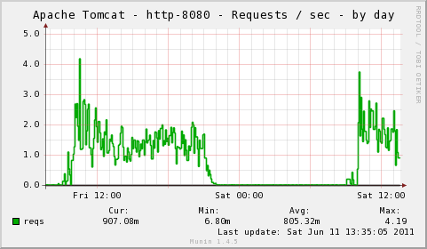
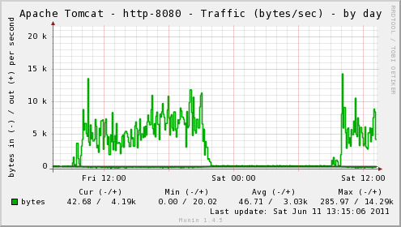
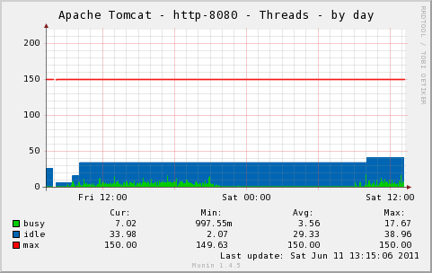
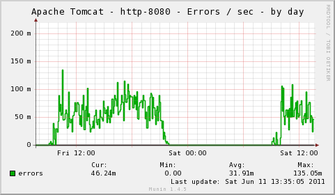
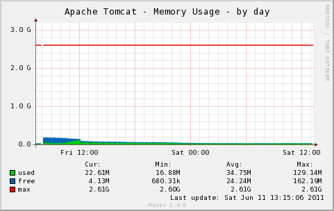

The multigraph plugin implements the following graphs:
The Apache Tomcat Manager Interface must be accesible and the user credentials for accesing the Status Page must be configured. Configuration example from tomcat-users.xml:
<user username="munin" password="********" roles="standard,manager"/>
|  |  |
|  |  |
|  |
| Variable | Description |
|---|---|
| host | Apache Tomcat Host. (Default: 127.0.0.1) |
| port | Apache Tomcat Port. (Default: 8080, SSL: 8443) |
| user | Apache Tomcat Manager User. |
| password | Apache Tomcat Manager Password. |
| ssl | Use SSL if True. (Default: False) |
| include_ports | Comma separated list of connector ports to include in graphs. (All included by default.) |
| exclude_ports | Comma separated list of connector ports to include in graphs. |
| include_graphs | Comma separated list of enabled graphs. (All graphs enabled by default.) |
| exclude_graphs | Comma separated list of disabled graphs. |